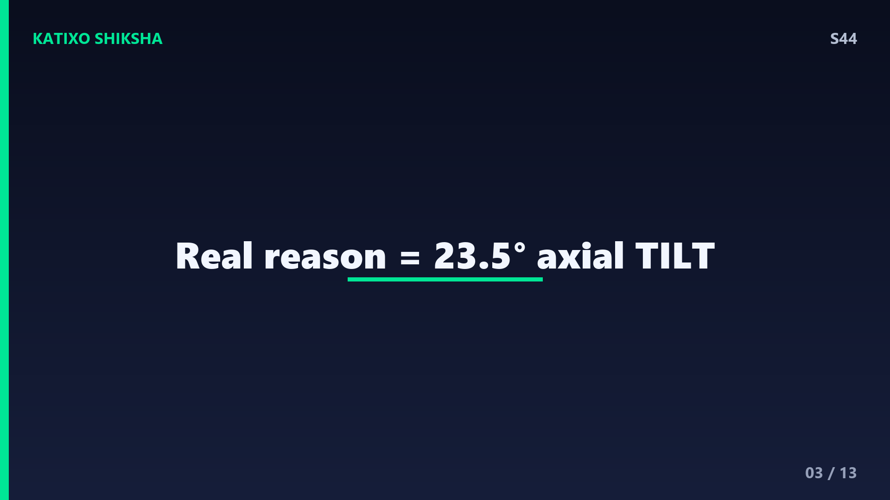
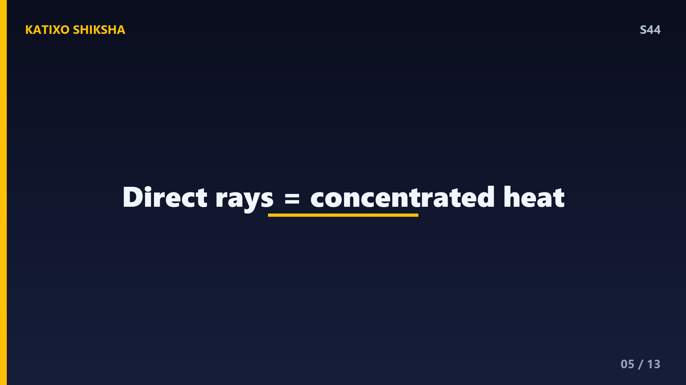
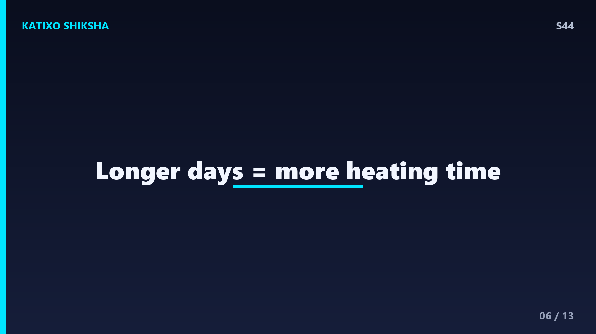
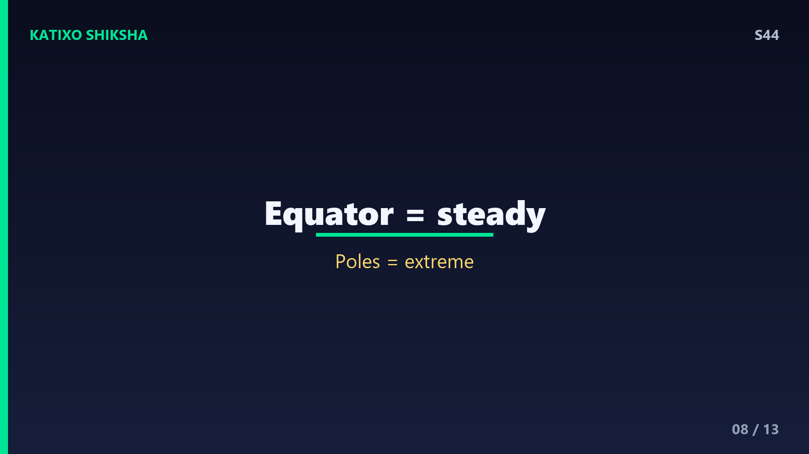

S44 — मौसम बदलते क्यों हैं?
Slide 1दोस्तों, कभी सोचा है — गर्मियों में सूरज आग बरसाता है और सर्दियों में वही सूरज ठंडा-ठंडा लगता है? पेड़ों के पत्ते गिरते हैं, फिर वसंत में नई कोपलें आती हैं — पूरी धरती हर कुछ महीनों में अपना रूप बदल लेती है! पर ये seasons यानी मौसम बदलते क्यों हैं? ज़्यादातर लोग सोचते हैं धरती सूरज के पास-दूर जाती है — पर यह जवाब बिल्कुल ग़लत है! आज Katixo KhojLab पर हम असली कारण जानेंगे। चलो शुरू करें!
Slide 2सबसे पहले एक बड़ा myth तोड़ देते हैं। बहुत लोग सोचते हैं कि गर्मी इसलिए होती है क्योंकि धरती सूरज के पास आ जाती है। यह बिल्कुल ग़लत है! दिलचस्प बात — धरती सूरज के सबसे पास जनवरी की शुरुआत में होती है, जब उत्तरी गोलार्ध यानी भारत में सर्दी होती है! तो दूरी असली वजह नहीं है। अगर दूरी कारण होती, तो पूरी धरती पर एक ही समय गर्मी या सर्दी होती। पर ऐसा नहीं होता — जब हमारे यहां गर्मी होती है तब Australia में सर्दी! तो असली राज़ कुछ और है।

Slide 3असली कारण है — धरती का झुकाव यानी tilt. हमारी धरती सीधी खड़ी होकर नहीं घूमती, बल्कि अपनी धुरी पर लगभग साढ़े 23 डिग्री झुकी हुई है। एक लट्टू को सोचो जो थोड़ा तिरछा होकर घूम रहा है — बिल्कुल वैसे ही धरती झुकी हुई सूरज के चारों ओर चक्कर लगाती है। यह tilt हमेशा एक ही दिशा में रहता है। बस यही छोटा सा झुकाव पूरे साल के मौसमों का असली मास्टरमाइंड है। चलो देखते हैं यह कैसे काम करता है।
Slide 4अब समझो tilt का असर कैसे होता है। धरती सूरज के चारों ओर एक साल में पूरा चक्कर लगाती है। इस सफ़र में कभी उत्तरी गोलार्ध सूरज की तरफ़ झुका होता है और कभी दूर। जब हमारा हिस्सा सूरज की तरफ़ झुका होता है, तब वहां गर्मी होती है। और ठीक उसी समय दक्षिणी गोलार्ध सूरज से दूर झुका होता है, इसलिए वहां सर्दी होती है। छह महीने बाद उल्टा हो जाता है। यही reason है कि भारत और Australia में हमेशा उल्टे मौसम चलते हैं।

Slide 5पर सवाल यह है — सूरज की तरफ़ झुकने से गर्मी होती कैसे है? इसके दो बड़े कारण हैं। पहला — angle. जब सूरज सिर के ठीक ऊपर से सीधी किरणें भेजता है, तो वो किरणें ज़मीन के एक छोटे इलाके पर केंद्रित होती हैं, इसलिए ज़्यादा गर्मी देती हैं। सर्दियों में सूरज तिरछा रहता है, किरणें एक बड़े इलाके पर फैल जाती हैं और कमज़ोर पड़ जाती हैं — जैसे torch सीधी मारो तो तेज़ spot, और तिरछी मारो तो फैला हुआ हल्का धब्बा।

Slide 6दूसरा बड़ा कारण है — दिन की लंबाई. जब तुम्हारा गोलार्ध सूरज की तरफ़ झुका होता है, तो दिन लंबे होते हैं और रातें छोटी। मतलब सूरज ज़्यादा घंटे चमकता है, ज़मीन को गर्म होने का ज़्यादा time मिलता है। गर्मियों में याद करो — सुबह जल्दी उजाला और शाम देर तक रोशनी! सर्दियों में उल्टा — छोटे दिन, लंबी रातें, इसलिए ज़मीन ठंडी रहती है। तो सीधी किरणें और लंबे दिन — दोनों मिलकर गर्मी बनाते हैं।
Slide 7अब चारों seasons को tilt से जोड़ते हैं। जब उत्तरी गोलार्ध सबसे ज़्यादा सूरज की तरफ़ झुका होता है, करीब 21 जून, तब हमारे यहां गर्मी का चरम होता है — इसे summer solstice कहते हैं, साल का सबसे लंबा दिन। जब सबसे दूर झुका होता है, करीब 21 दिसंबर, तब सर्दी का चरम और सबसे छोटा दिन — winter solstice. और बीच में जब tilt न इधर न उधर होता है, करीब मार्च और सितंबर, तब spring और autumn आते हैं, जब दिन-रात लगभग बराबर होते हैं — इन्हें equinox कहते हैं।

Slide 8एक मज़ेदार बात — equator यानी भूमध्य रेखा के पास के देशों में मौसम इतना नहीं बदलता! क्योंकि वहां सूरज की किरणें साल भर लगभग सीधी पड़ती हैं और दिन-रात ज़्यादातर बराबर रहते हैं। इसीलिए ऐसे इलाक़ों में या तो हमेशा गर्मी रहती है या बारिश का मौसम। वहीं poles यानी ध्रुवों पर इतना ज़्यादा झुकाव असर करता है कि गर्मियों में सूरज महीनों तक नहीं डूबता और सर्दियों में महीनों तक नहीं निकलता! इसे midnight sun और polar night कहते हैं।
Slide 9एक और दिलचस्प बात — सबसे गर्म दिन 21 जून को क्यों नहीं होता, जबकि सूरज तो उसी दिन सबसे ज़्यादा सीधा होता है? इसे कहते हैं seasonal lag. ज़मीन और समुद्र को गर्म होने में time लगता है, ठीक वैसे जैसे चूल्हा बंद करने के बाद भी पानी कुछ देर गर्म होता रहता है। इसीलिए भारत में सबसे ज़्यादा गर्मी अक्सर मई या जून के आख़िर तक चलती है, और सबसे ज़्यादा ठंड दिसंबर के बाद जनवरी में पड़ती है।
Slide 10तो याद रखने वाली सबसे बड़ी बात — seasons का कारण है धरती का साढ़े 23 डिग्री का झुकाव, सूरज से दूरी नहीं! यही tilt तय करता है कि किस हिस्से पर सूरज की किरणें कितनी सीधी पड़ें और दिन कितने लंबे हों। अगर धरती बिल्कुल सीधी होती, तो कोई season ही नहीं होता — हर जगह साल भर एक जैसा मौसम रहता! यानी ये खूबसूरत बदलते मौसम, फ़सलें, त्योहार — सब उस छोटे से झुकाव का तोहफ़ा हैं।
Slide 11Quick brain check, दोस्तों! तीन सवाल — दिमाग़ लगाओ। पहला — seasons का असली कारण क्या है, दूरी या tilt? दूसरा — जब भारत में गर्मी होती है, तब Australia में कौन सा मौसम होता है और क्यों? और तीसरा — equator के पास मौसम इतना कम क्यों बदलता है? Video को pause करो, थोड़ा सोचो, और जवाब मन में या comments में लिखो। तैयार हो? चलो जवाब मिलाते हैं!
Slide 12अब जवाब! पहला — seasons का असली कारण है धरती का साढ़े 23 डिग्री tilt, सूरज से दूरी नहीं। दूसरा — जब भारत में गर्मी होती है तब Australia में सर्दी, क्योंकि उस समय उत्तरी गोलार्ध सूरज की तरफ़ और दक्षिणी गोलार्ध सूरज से दूर झुका होता है। तीसरा — equator के पास सूरज की किरणें साल भर लगभग सीधी पड़ती हैं और दिन-रात बराबर रहते हैं, इसलिए मौसम कम बदलता है। सब सही? Kamaal!
Slide 13तो दोस्तों, आज हमने सीखा — मौसम सूरज से दूरी की वजह से नहीं, बल्कि धरती के झुकाव की वजह से बदलते हैं। यही tilt किरणों का angle और दिन की लंबाई बदलता है, जिससे गर्मी, सर्दी, वसंत और पतझड़ आते हैं। एक छोटा सा साढ़े 23 डिग्री का झुकाव और पूरी दुनिया का मौसम बदल जाता है! अगले episode में हम जानेंगे एक रोमांचक सवाल — इतने भारी planes हवा में टिके कैसे रहते हैं! मज़ा आया तो Subscribe करना मत भूलना! Bye!